library(tidyverse)
library(here)
library(forecast)
library(tidymodels)Univariate Linear Regressions
Load packages
Load data
data <- readRDS(here("data/processed_data/covid_wbe_7dma_weekly.rds")) %>%
mutate(log10_vl_7dma=log10(vl_7dma),
log_case_pos_7dma=log(case_pcr_pos_7dma),
case_prop_pos_7dma=case_prop_pos_7dma*100,
log_case_prop_pos_7dma=log(case_prop_pos_7dma),
log_pr_7dma=log(pr_7dma))
#certain variables have been transformed due to distribution abnormality, with some distributions being normalized by certain transformations
#i wanted to build models with both transformed and non-transformed data to compare performancesData splitting
See notes on script 3 for details
data_train_dates <- data %>% head(n = 92) #selects dates before or on the 13th week of 2022 (end of March)
split <- initial_split(data_train_dates, prop=8/10) #reserve 20% of observations at random to do validation
set.seed(13)
train <- training(split) #create dataset to train models with
set.seed(16)
test <- testing(split) #create smaller dataset to do model performance validation withDefine model
lr <- linear_reg()
null <- null_model() %>% set_engine("parsnip") %>% set_mode("regression")A) Log10 Viral load as predictor
1. Positive test count 7DMA ~ VL 7DMA
Viz
hist(log(data$case_pcr_pos_7dma)) #check distribution of dependent variable (more normal when natural log transformed)
hist(log10(data$vl_7dma)) #distribution of independent variable (somewhat normally distributed)
plot(log10(case_pcr_pos_7dma)~ log10(vl_7dma), data=data)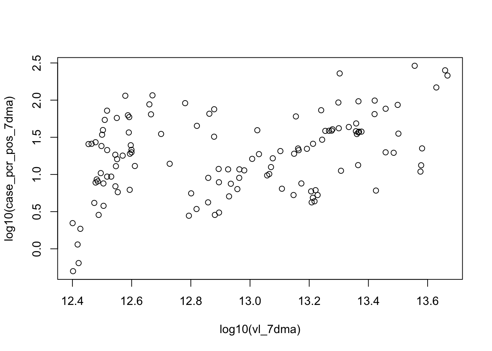
Model
recipe1 <- recipe(case_pcr_pos_7dma ~ log10_vl_7dma, data = train) #recipe
####################################################################################
workflow1 <- workflow() %>%
add_model(lr) %>%
add_recipe(recipe1) #model workflow
####################################################################################
set.seed(13)
fit1 <- workflow1 %>%
fit(data = train) #fit model to data
tidy(fit1) # A tibble: 2 × 5
term estimate std.error statistic p.value
<chr> <dbl> <dbl> <dbl> <dbl>
1 (Intercept) -802. 150. -5.34 0.00000125
2 log10_vl_7dma 65.7 11.7 5.60 0.000000449####################################################################################
aug_train1 <- augment(fit1, train)
aug_train1 %>% select(case_pcr_pos_7dma, .pred) #make predictions on train data# A tibble: 73 × 2
case_pcr_pos_7dma .pred
<dbl> <dbl>
1 34.3 19.6
2 98.6 80.1
3 16.2 52.9
4 76.6 82.6
5 9.36 20.7
6 9 43.2
7 13 26.9
8 0.643 14.4
9 2.86 44.6
10 64.4 30.4
# … with 63 more rows####################################################################################
set.seed(13)
folds1 <- vfold_cv(train, v = 5, repeats = 5, strata = case_pcr_pos_7dma)Warning: The number of observations in each quantile is below the recommended threshold of 20.
• Stratification will use 3 breaks instead.
The number of observations in each quantile is below the recommended threshold of 20.
• Stratification will use 3 breaks instead.
The number of observations in each quantile is below the recommended threshold of 20.
• Stratification will use 3 breaks instead.
The number of observations in each quantile is below the recommended threshold of 20.
• Stratification will use 3 breaks instead.
The number of observations in each quantile is below the recommended threshold of 20.
• Stratification will use 3 breaks instead.set.seed(13)
cv1 <- fit_resamples(workflow1, resamples = folds1)
cv1_metrics <- collect_metrics(cv1)
cv1_metrics #check cross validation metrics# A tibble: 2 × 6
.metric .estimator mean n std_err .config
<chr> <chr> <dbl> <int> <dbl> <chr>
1 rmse standard 33.6 25 1.66 Preprocessor1_Model1
2 rsq standard 0.326 25 0.0488 Preprocessor1_Model1####################################################################################
workflow_null1 <- workflow() %>%
add_model(null) %>%
add_recipe(recipe1)
null_cv_metrics1 <- fit_resamples(workflow_null1, resamples = folds1)
collect_metrics(null_cv_metrics1) #check null model# A tibble: 2 × 6
.metric .estimator mean n std_err .config
<chr> <chr> <dbl> <int> <dbl> <chr>
1 rmse standard 37.8 25 2.17 Preprocessor1_Model1
2 rsq standard NaN 0 NA Preprocessor1_Model1####################################################################################
rmse1 <- aug_train1 %>% rmse(truth = case_pcr_pos_7dma, .pred)
rsq1 <- aug_train1 %>% rsq(truth = case_pcr_pos_7dma, .pred)
m1_metrics <- full_join(rmse1, rsq1)
m1_metrics #check metrics of predictions on train data# A tibble: 2 × 3
.metric .estimator .estimate
<chr> <chr> <dbl>
1 rmse standard 32.9
2 rsq standard 0.322####################################################################################
aug_train1 %>% ggplot(aes(case_pcr_pos_7dma, .pred)) +
geom_point() +
stat_smooth(method = "lm") #check actual vs predictedWarning: Removed 5 rows containing non-finite values (`stat_smooth()`).Warning: Removed 5 rows containing missing values (`geom_point()`).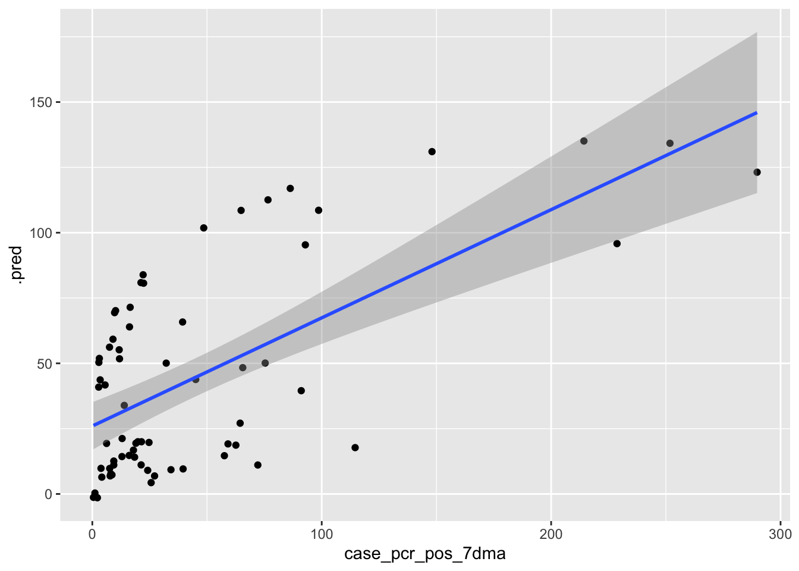
2. Natural log positive test count 7DMA ~ log10 VL 7DMA
Viz
hist(data$log_case_pos_7dma) #check distribution of dependent variable (more normal when natural log transformed)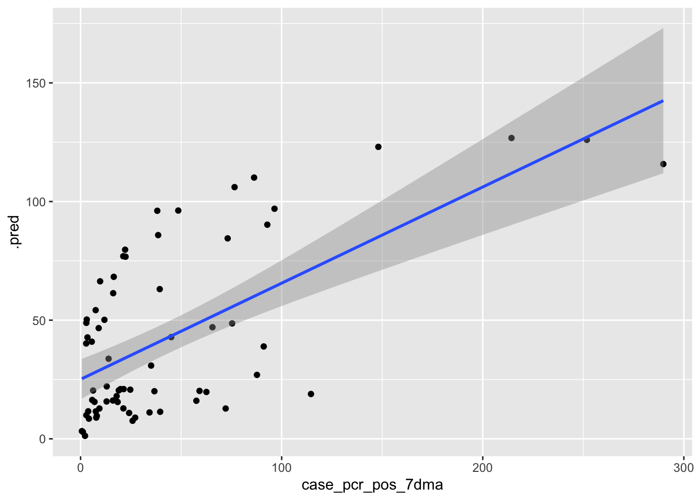
hist(log10(data$vl_7dma)) #distribution of independent variable (somewhat normally distributed)
plot(log_case_pos_7dma~ log10(vl_7dma), data=data)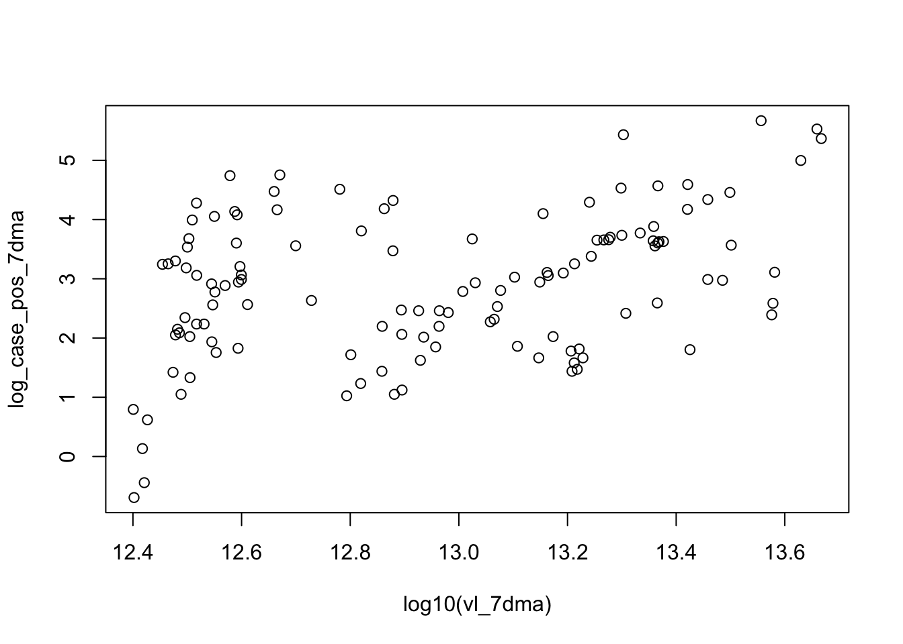
Model
recipe2 <- recipe(log_case_pos_7dma ~ log10_vl_7dma, data = train) #recipe
####################################################################################
workflow2 <- workflow() %>%
add_model(lr) %>%
add_recipe(recipe2) #model workflow
####################################################################################
set.seed(13)
fit2 <- workflow2 %>%
fit(data = train) #fit model to data
tidy(fit2) # A tibble: 2 × 5
term estimate std.error statistic p.value
<chr> <dbl> <dbl> <dbl> <dbl>
1 (Intercept) -21.1 5.09 -4.14 0.000100
2 log10_vl_7dma 1.89 0.397 4.74 0.0000116####################################################################################
aug_train2 <- augment(fit2, train)
aug_train2 %>% select(log_case_pos_7dma, .pred) #make predictions on train data# A tibble: 73 × 2
log_case_pos_7dma .pred
<dbl> <dbl>
1 3.53 2.49
2 4.59 4.23
3 2.79 3.45
4 4.34 4.30
5 2.24 2.52
6 2.20 3.17
7 2.56 2.70
8 -0.442 2.34
9 1.05 3.21
10 4.17 2.80
# … with 63 more rows####################################################################################
set.seed(13)
folds2 <- vfold_cv(train, v = 5, repeats = 5, strata = log_case_pos_7dma)Warning: The number of observations in each quantile is below the recommended threshold of 20.
• Stratification will use 3 breaks instead.
The number of observations in each quantile is below the recommended threshold of 20.
• Stratification will use 3 breaks instead.
The number of observations in each quantile is below the recommended threshold of 20.
• Stratification will use 3 breaks instead.
The number of observations in each quantile is below the recommended threshold of 20.
• Stratification will use 3 breaks instead.
The number of observations in each quantile is below the recommended threshold of 20.
• Stratification will use 3 breaks instead.set.seed(13)
cv2 <- fit_resamples(workflow2, resamples = folds2)
cv2_metrics <- collect_metrics(cv2)
cv2_metrics #check cross validation metrics# A tibble: 2 × 6
.metric .estimator mean n std_err .config
<chr> <chr> <dbl> <int> <dbl> <chr>
1 rmse standard 1.12 25 0.0411 Preprocessor1_Model1
2 rsq standard 0.273 25 0.0305 Preprocessor1_Model1####################################################################################
workflow_null2 <- workflow() %>%
add_model(null) %>%
add_recipe(recipe2)
null_cv_metrics2 <- fit_resamples(workflow_null2, resamples = folds2)
collect_metrics(null_cv_metrics2) #check null model# A tibble: 2 × 6
.metric .estimator mean n std_err .config
<chr> <chr> <dbl> <int> <dbl> <chr>
1 rmse standard 1.25 25 0.0445 Preprocessor1_Model1
2 rsq standard NaN 0 NA Preprocessor1_Model1####################################################################################
rmse2 <- aug_train2 %>% rmse(truth = log_case_pos_7dma, .pred)
rsq2 <- aug_train2 %>% rsq(truth = log_case_pos_7dma, .pred)
m2_metrics <- full_join(rmse2, rsq2)
m2_metrics #check metrics of predictions on train data# A tibble: 2 × 3
.metric .estimator .estimate
<chr> <chr> <dbl>
1 rmse standard 1.11
2 rsq standard 0.254####################################################################################
aug_train2 %>% ggplot(aes(log_case_pos_7dma, .pred)) +
geom_point() +
stat_smooth(method = "lm") #check actual vs predictedWarning: Removed 5 rows containing non-finite values (`stat_smooth()`).Warning: Removed 5 rows containing missing values (`geom_point()`).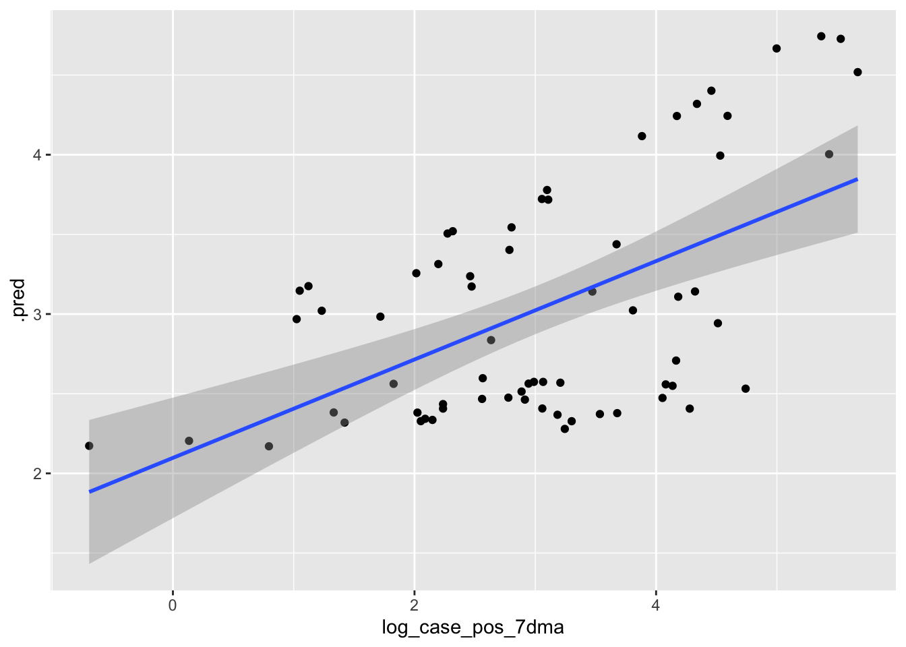
3. Test positivity rate 7DMA ~ log10 VL 7DMA
hist(data$case_prop_pos_7dma) #check distribution of dependent variable (somewhat skewed)
hist(log10(data$vl_7dma)) #distribution of independent variable (somewhat normally except for observations near LOD
plot(case_prop_pos_7dma ~ log10(vl_7dma), data=data)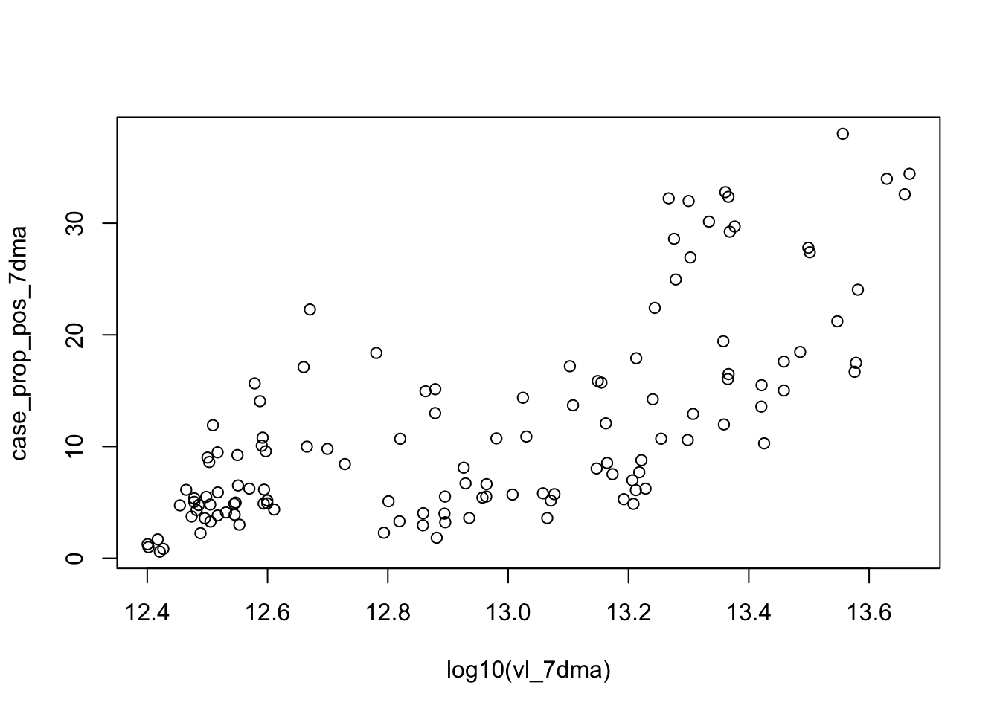
Model
recipe3 <- recipe(case_prop_pos_7dma ~ log10_vl_7dma, data = train) #recipe
####################################################################################
workflow3 <- workflow() %>%
add_model(lr) %>%
add_recipe(recipe3) #model workflow
####################################################################################
set.seed(13)
fit3 <- workflow3 %>%
fit(data = train) #fit model to data
tidy(fit3) # A tibble: 2 × 5
term estimate std.error statistic p.value
<chr> <dbl> <dbl> <dbl> <dbl>
1 (Intercept) -164. 24.1 -6.82 3.41e- 9
2 log10_vl_7dma 13.6 1.88 7.21 6.75e-10####################################################################################
aug_train3 <- augment(fit3, train)
aug_train3 %>% select(case_prop_pos_7dma, .pred) #make predictions on train data# A tibble: 73 × 2
case_prop_pos_7dma .pred
<dbl> <dbl>
1 9.02 5.36
2 15.5 17.8
3 5.70 12.2
4 15.0 18.3
5 3.83 5.58
6 4.03 10.2
7 4.36 6.86
8 0.592 4.28
9 1.84 10.5
10 9.99 7.60
# … with 63 more rows####################################################################################
set.seed(13)
folds3 <- vfold_cv(train, v = 5, repeats = 5, strata = case_prop_pos_7dma)Warning: The number of observations in each quantile is below the recommended threshold of 20.
• Stratification will use 3 breaks instead.
The number of observations in each quantile is below the recommended threshold of 20.
• Stratification will use 3 breaks instead.
The number of observations in each quantile is below the recommended threshold of 20.
• Stratification will use 3 breaks instead.
The number of observations in each quantile is below the recommended threshold of 20.
• Stratification will use 3 breaks instead.
The number of observations in each quantile is below the recommended threshold of 20.
• Stratification will use 3 breaks instead.set.seed(13)
cv3 <- fit_resamples(workflow3, resamples = folds3)
cv3_metrics <- collect_metrics(cv3)
cv3_metrics #check cross validation metrics# A tibble: 2 × 6
.metric .estimator mean n std_err .config
<chr> <chr> <dbl> <int> <dbl> <chr>
1 rmse standard 5.37 25 0.197 Preprocessor1_Model1
2 rsq standard 0.472 25 0.0248 Preprocessor1_Model1####################################################################################
workflow_null3 <- workflow() %>%
add_model(null) %>%
add_recipe(recipe3)
null_cv_metrics3 <- fit_resamples(workflow_null3, resamples = folds3)
collect_metrics(null_cv_metrics3) #check null model# A tibble: 2 × 6
.metric .estimator mean n std_err .config
<chr> <chr> <dbl> <int> <dbl> <chr>
1 rmse standard 6.70 25 0.321 Preprocessor1_Model1
2 rsq standard NaN 0 NA Preprocessor1_Model1####################################################################################
rmse3 <- aug_train3 %>% rmse(truth = case_prop_pos_7dma, .pred)
rsq3 <- aug_train3 %>% rsq(truth = case_prop_pos_7dma, .pred)
m3_metrics <- full_join(rmse3, rsq3)
m3_metrics #check metrics of predictions on train data# A tibble: 2 × 3
.metric .estimator .estimate
<chr> <chr> <dbl>
1 rmse standard 5.27
2 rsq standard 0.441####################################################################################
aug_train3 %>% ggplot(aes(case_prop_pos_7dma, .pred)) +
geom_point() +
stat_smooth(method = "lm") #check actual vs predictedWarning: Removed 5 rows containing non-finite values (`stat_smooth()`).Warning: Removed 5 rows containing missing values (`geom_point()`).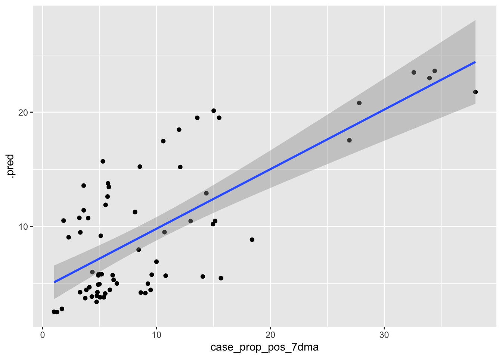
4. Natural log test positivity rate 7DMA ~ log10 VL 7DMA
hist(data$log_case_prop_pos_7dma*100) #check distribution of dependent variable (more normally distributed)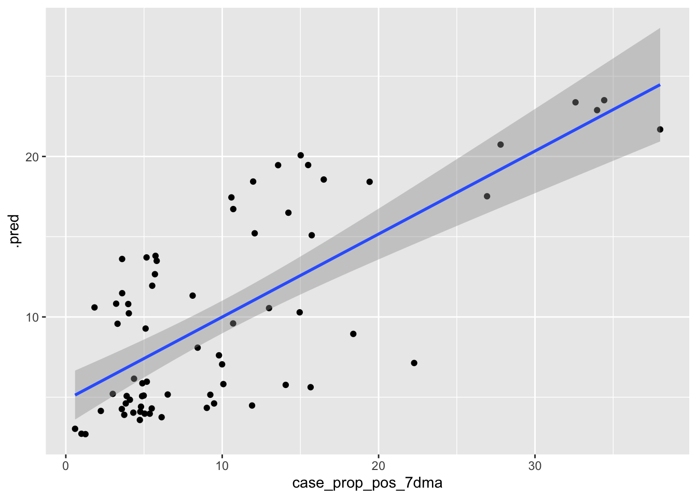
hist(log10(data$vl_7dma)) #distribution of independent variable (somewhat normally distributed except values near LOD)
plot(log_case_prop_pos_7dma*100 ~ log10(vl_7dma), data=data)
Model
recipe4 <- recipe(log_case_prop_pos_7dma ~ log10_vl_7dma, data = train) #recipe
####################################################################################
workflow4 <- workflow() %>%
add_model(lr) %>%
add_recipe(recipe4) #model workflow
####################################################################################
set.seed(13)
fit4 <- workflow4 %>%
fit(data = train) #fit model to data
tidy(fit4) # A tibble: 2 × 5
term estimate std.error statistic p.value
<chr> <dbl> <dbl> <dbl> <dbl>
1 (Intercept) -15.8 2.94 -5.38 0.00000105
2 log10_vl_7dma 1.39 0.230 6.05 0.0000000758####################################################################################
aug_train4 <- augment(fit4, train)
aug_train4 %>% select(log_case_prop_pos_7dma, .pred) #make predictions on train data# A tibble: 73 × 2
log_case_prop_pos_7dma .pred
<dbl> <dbl>
1 2.20 1.54
2 2.74 2.82
3 1.74 2.25
4 2.71 2.88
5 1.34 1.57
6 1.39 2.04
7 1.47 1.70
8 -0.524 1.43
9 0.607 2.07
10 2.30 1.77
# … with 63 more rows####################################################################################
set.seed(13)
folds4 <- vfold_cv(train, v = 5, repeats = 5, strata = log_case_prop_pos_7dma)Warning: The number of observations in each quantile is below the recommended threshold of 20.
• Stratification will use 3 breaks instead.
The number of observations in each quantile is below the recommended threshold of 20.
• Stratification will use 3 breaks instead.
The number of observations in each quantile is below the recommended threshold of 20.
• Stratification will use 3 breaks instead.
The number of observations in each quantile is below the recommended threshold of 20.
• Stratification will use 3 breaks instead.
The number of observations in each quantile is below the recommended threshold of 20.
• Stratification will use 3 breaks instead.set.seed(13)
cv4 <- fit_resamples(workflow4, resamples = folds4)
cv4_metrics <- collect_metrics(cv4)
cv4_metrics #check cross validation metrics# A tibble: 2 × 6
.metric .estimator mean n std_err .config
<chr> <chr> <dbl> <int> <dbl> <chr>
1 rmse standard 0.651 25 0.0209 Preprocessor1_Model1
2 rsq standard 0.384 25 0.0186 Preprocessor1_Model1####################################################################################
workflow_null4 <- workflow() %>%
add_model(null) %>%
add_recipe(recipe4)
null_cv_metrics4 <- fit_resamples(workflow_null4, resamples = folds4)
collect_metrics(null_cv_metrics4) #check null model# A tibble: 2 × 6
.metric .estimator mean n std_err .config
<chr> <chr> <dbl> <int> <dbl> <chr>
1 rmse standard 0.779 25 0.0288 Preprocessor1_Model1
2 rsq standard NaN 0 NA Preprocessor1_Model1####################################################################################
rmse4 <- aug_train4 %>% rmse(truth = log_case_prop_pos_7dma, .pred)
rsq4 <- aug_train4 %>% rsq(truth = log_case_prop_pos_7dma, .pred)
m4_metrics <- full_join(rmse4, rsq4)
m4_metrics #check metrics of predictions on train data# A tibble: 2 × 3
.metric .estimator .estimate
<chr> <chr> <dbl>
1 rmse standard 0.644
2 rsq standard 0.357####################################################################################
aug_train4 %>% ggplot(aes(log_case_prop_pos_7dma, .pred)) +
geom_point() +
stat_smooth(method = "lm") #check actual vs predictedWarning: Removed 5 rows containing non-finite values (`stat_smooth()`).Warning: Removed 5 rows containing missing values (`geom_point()`).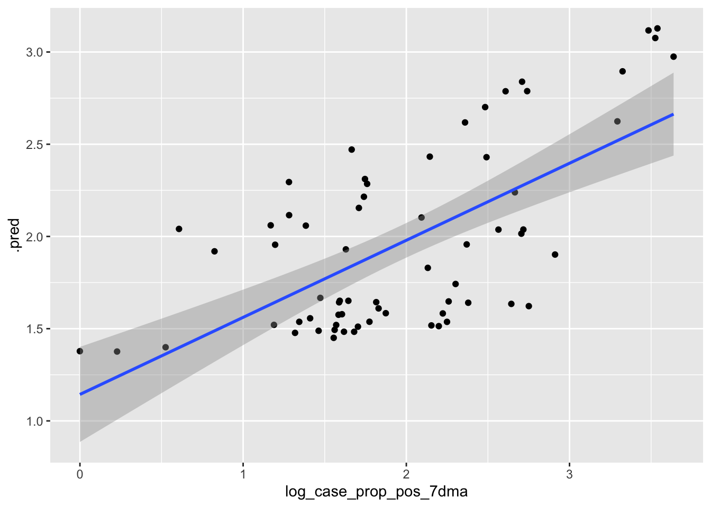
B) qPCR positivity rate as predictor
1. Positive test 7DMA ~ WW PR 7DMA
Viz
hist(log10(data$case_pcr_pos_7dma)) #check distribution of dependent variable, more normal when log transformed
hist(data$pr_7dma) #distribution of independent variable 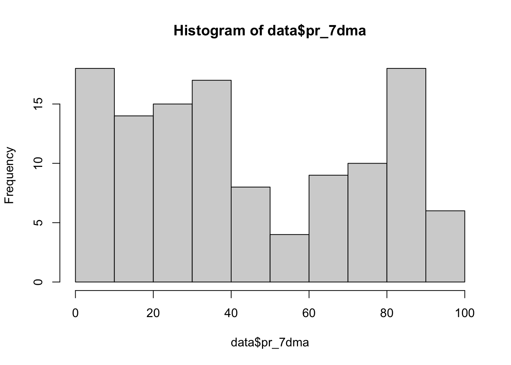
plot(log10(case_pcr_pos_7dma) ~ pr_7dma, data=data) #log-transformed looks better
plot(case_pcr_pos_7dma ~ pr_7dma, data=data) 
Model
recipe5 <- recipe(case_pcr_pos_7dma ~ pr_7dma, data = train) #recipe
####################################################################################
workflow5 <- workflow() %>%
add_model(lr) %>%
add_recipe(recipe5) #model workflow
####################################################################################
set.seed(13)
fit5 <- workflow5 %>%
fit(data = train) #fit model to data
tidy(fit5) # A tibble: 2 × 5
term estimate std.error statistic p.value
<chr> <dbl> <dbl> <dbl> <dbl>
1 (Intercept) 5.56 6.18 0.900 0.372
2 pr_7dma 1.03 0.144 7.11 0.00000000117####################################################################################
aug_train5 <- augment(fit5, train)
aug_train5 %>% select(case_pcr_pos_7dma, .pred) #make predictions on train data# A tibble: 73 × 2
case_pcr_pos_7dma .pred
<dbl> <dbl>
1 34.3 26.9
2 98.6 93.7
3 16.2 47.7
4 76.6 97.8
5 9.36 14.6
6 9 33.1
7 13 42.0
8 0.643 8.68
9 2.86 23.1
10 64.4 34.3
# … with 63 more rows####################################################################################
set.seed(13)
folds5 <- vfold_cv(train, v = 5, repeats = 5, strata = case_pcr_pos_7dma)Warning: The number of observations in each quantile is below the recommended threshold of 20.
• Stratification will use 3 breaks instead.
The number of observations in each quantile is below the recommended threshold of 20.
• Stratification will use 3 breaks instead.
The number of observations in each quantile is below the recommended threshold of 20.
• Stratification will use 3 breaks instead.
The number of observations in each quantile is below the recommended threshold of 20.
• Stratification will use 3 breaks instead.
The number of observations in each quantile is below the recommended threshold of 20.
• Stratification will use 3 breaks instead.set.seed(13)
cv5 <- fit_resamples(workflow5, resamples = folds5)
cv5_metrics <- collect_metrics(cv5)
cv5_metrics #check cross validation metrics# A tibble: 2 × 6
.metric .estimator mean n std_err .config
<chr> <chr> <dbl> <int> <dbl> <chr>
1 rmse standard 30.5 25 1.56 Preprocessor1_Model1
2 rsq standard 0.437 25 0.0504 Preprocessor1_Model1####################################################################################
workflow_null5 <- workflow() %>%
add_model(null) %>%
add_recipe(recipe5)
null_cv_metrics5 <- fit_resamples(workflow_null5, resamples = folds5)
collect_metrics(null_cv_metrics5) #check null model# A tibble: 2 × 6
.metric .estimator mean n std_err .config
<chr> <chr> <dbl> <int> <dbl> <chr>
1 rmse standard 37.8 25 2.17 Preprocessor1_Model1
2 rsq standard NaN 0 NA Preprocessor1_Model1####################################################################################
rmse5 <- aug_train5 %>% rmse(truth = case_pcr_pos_7dma, .pred)
rsq5 <- aug_train5 %>% rsq(truth = case_pcr_pos_7dma, .pred)
m5_metrics <- full_join(rmse5, rsq5)
m5_metrics #check metrics of predictions on train data# A tibble: 2 × 3
.metric .estimator .estimate
<chr> <chr> <dbl>
1 rmse standard 30.0
2 rsq standard 0.442####################################################################################
aug_train5 %>% ggplot(aes(case_pcr_pos_7dma, .pred)) +
geom_point() +
stat_smooth(method = "lm") #check actual vs predictedWarning: Removed 7 rows containing non-finite values (`stat_smooth()`).Warning: Removed 7 rows containing missing values (`geom_point()`).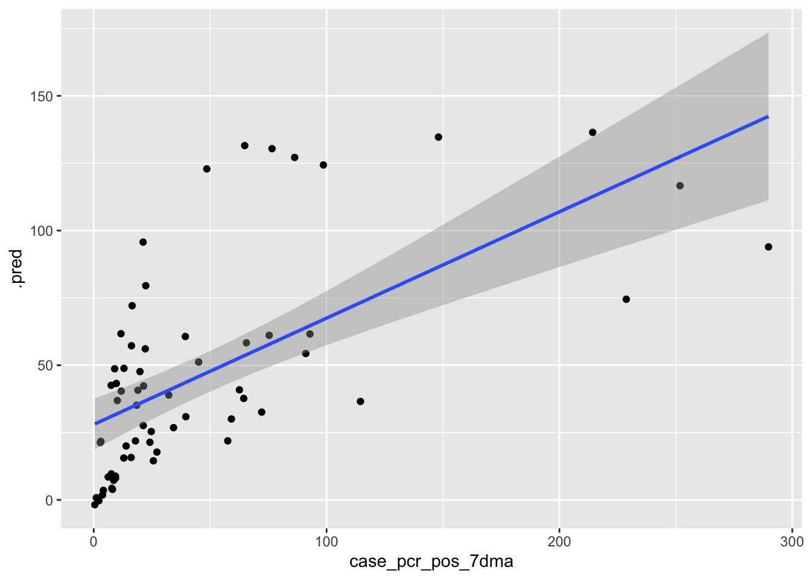
2. Natural log positive test count
Model
recipe6 <- recipe(log_case_pos_7dma ~ pr_7dma, data = train) #recipe
####################################################################################
workflow6 <- workflow() %>%
add_model(lr) %>%
add_recipe(recipe6) #model workflow
####################################################################################
set.seed(13)
fit6 <- workflow6 %>%
fit(data = train) #fit model to data
tidy(fit6) # A tibble: 2 × 5
term estimate std.error statistic p.value
<chr> <dbl> <dbl> <dbl> <dbl>
1 (Intercept) 2.01 0.197 10.2 5.09e-15
2 pr_7dma 0.0324 0.00460 7.05 1.53e- 9####################################################################################
aug_train6 <- augment(fit6, train)
aug_train6 %>% select(log_case_pos_7dma, .pred) #make predictions on train data# A tibble: 73 × 2
log_case_pos_7dma .pred
<dbl> <dbl>
1 3.53 2.68
2 4.59 4.79
3 2.79 3.34
4 4.34 4.92
5 2.24 2.29
6 2.20 2.88
7 2.56 3.16
8 -0.442 2.11
9 1.05 2.56
10 4.17 2.92
# … with 63 more rows####################################################################################
set.seed(13)
folds6 <- vfold_cv(train, v = 5, repeats = 5, strata = log_case_pos_7dma)Warning: The number of observations in each quantile is below the recommended threshold of 20.
• Stratification will use 3 breaks instead.
The number of observations in each quantile is below the recommended threshold of 20.
• Stratification will use 3 breaks instead.
The number of observations in each quantile is below the recommended threshold of 20.
• Stratification will use 3 breaks instead.
The number of observations in each quantile is below the recommended threshold of 20.
• Stratification will use 3 breaks instead.
The number of observations in each quantile is below the recommended threshold of 20.
• Stratification will use 3 breaks instead.set.seed(13)
cv6 <- fit_resamples(workflow6, resamples = folds6)
cv6_metrics <- collect_metrics(cv6)
cv6_metrics #check cross validation metrics# A tibble: 2 × 6
.metric .estimator mean n std_err .config
<chr> <chr> <dbl> <int> <dbl> <chr>
1 rmse standard 0.960 25 0.0399 Preprocessor1_Model1
2 rsq standard 0.462 25 0.0329 Preprocessor1_Model1####################################################################################
workflow_null6 <- workflow() %>%
add_model(null) %>%
add_recipe(recipe6)
null_cv_metrics6 <- fit_resamples(workflow_null6, resamples = folds6)
collect_metrics(null_cv_metrics6) #check null model# A tibble: 2 × 6
.metric .estimator mean n std_err .config
<chr> <chr> <dbl> <int> <dbl> <chr>
1 rmse standard 1.25 25 0.0445 Preprocessor1_Model1
2 rsq standard NaN 0 NA Preprocessor1_Model1####################################################################################
rmse6 <- aug_train6 %>% rmse(truth = log_case_pos_7dma, .pred)
rsq6 <- aug_train6 %>% rsq(truth = log_case_pos_7dma, .pred)
m6_metrics <- full_join(rmse6, rsq6)
m6_metrics #check metrics of predictions on train data# A tibble: 2 × 3
.metric .estimator .estimate
<chr> <chr> <dbl>
1 rmse standard 0.956
2 rsq standard 0.437####################################################################################
aug_train6 %>% ggplot(aes(log_case_pos_7dma, .pred)) +
geom_point() +
stat_smooth(method = "lm") #check actual vs predictedWarning: Removed 7 rows containing non-finite values (`stat_smooth()`).Warning: Removed 7 rows containing missing values (`geom_point()`).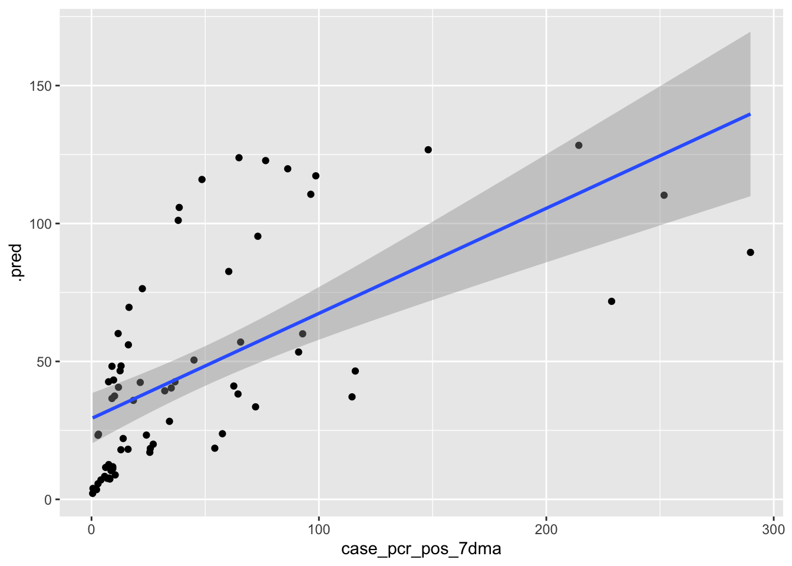
3. Test positivity rate 7DMA ~ WW PR 7DMA
Viz
hist(data$case_prop_pos_7dma) #check distribution of dependent variable 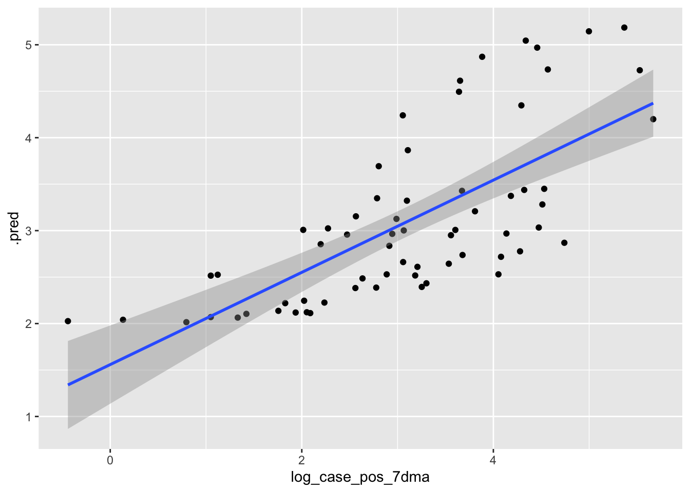
hist(data$pr_7dma) #distribution of independent variable 
plot(case_prop_pos_7dma ~ pr_7dma, data=data)
Model
recipe7 <- recipe(case_prop_pos_7dma ~ pr_7dma, data = train) #recipe
####################################################################################
workflow7 <- workflow() %>%
add_model(lr) %>%
add_recipe(recipe7) #model workflow
####################################################################################
set.seed(13)
fit7 <- workflow7 %>%
fit(data = train) #fit model to data
tidy(fit7) # A tibble: 2 × 5
term estimate std.error statistic p.value
<chr> <dbl> <dbl> <dbl> <dbl>
1 (Intercept) 2.63 0.959 2.74 7.92e- 3
2 pr_7dma 0.206 0.0224 9.17 2.82e-13####################################################################################
aug_train7 <- augment(fit7, train)
aug_train7 %>% select(case_prop_pos_7dma, .pred) #make predictions on train data# A tibble: 73 × 2
case_prop_pos_7dma .pred
<dbl> <dbl>
1 9.02 6.91
2 15.5 20.3
3 5.70 11.1
4 15.0 21.1
5 3.83 4.43
6 4.03 8.15
7 4.36 9.92
8 0.592 3.25
9 1.84 6.15
10 9.99 8.39
# … with 63 more rows####################################################################################
set.seed(13)
folds7 <- vfold_cv(train, v = 5, repeats = 5, strata = case_prop_pos_7dma)Warning: The number of observations in each quantile is below the recommended threshold of 20.
• Stratification will use 3 breaks instead.
The number of observations in each quantile is below the recommended threshold of 20.
• Stratification will use 3 breaks instead.
The number of observations in each quantile is below the recommended threshold of 20.
• Stratification will use 3 breaks instead.
The number of observations in each quantile is below the recommended threshold of 20.
• Stratification will use 3 breaks instead.
The number of observations in each quantile is below the recommended threshold of 20.
• Stratification will use 3 breaks instead.set.seed(13)
cv7 <- fit_resamples(workflow7, resamples = folds7)
cv7_metrics <- collect_metrics(cv7)
cv7_metrics #check cross validation metrics# A tibble: 2 × 6
.metric .estimator mean n std_err .config
<chr> <chr> <dbl> <int> <dbl> <chr>
1 rmse standard 4.90 25 0.183 Preprocessor1_Model1
2 rsq standard 0.637 25 0.0277 Preprocessor1_Model1####################################################################################
workflow_null7 <- workflow() %>%
add_model(null) %>%
add_recipe(recipe7)
null_cv_metrics7 <- fit_resamples(workflow_null7, resamples = folds7)
collect_metrics(null_cv_metrics7) #check null model# A tibble: 2 × 6
.metric .estimator mean n std_err .config
<chr> <chr> <dbl> <int> <dbl> <chr>
1 rmse standard 6.70 25 0.321 Preprocessor1_Model1
2 rsq standard NaN 0 NA Preprocessor1_Model1####################################################################################
rmse7 <- aug_train7 %>% rmse(truth = case_prop_pos_7dma, .pred)
rsq7 <- aug_train7 %>% rsq(truth = case_prop_pos_7dma, .pred)
m7_metrics <- full_join(rmse7, rsq7)
m7_metrics #check metrics of predictions on train data# A tibble: 2 × 3
.metric .estimator .estimate
<chr> <chr> <dbl>
1 rmse standard 4.65
2 rsq standard 0.568####################################################################################
aug_train7 %>% ggplot(aes(case_prop_pos_7dma, .pred)) +
geom_point() +
stat_smooth(method = "lm") #check actual vs predictedWarning: Removed 7 rows containing non-finite values (`stat_smooth()`).Warning: Removed 7 rows containing missing values (`geom_point()`).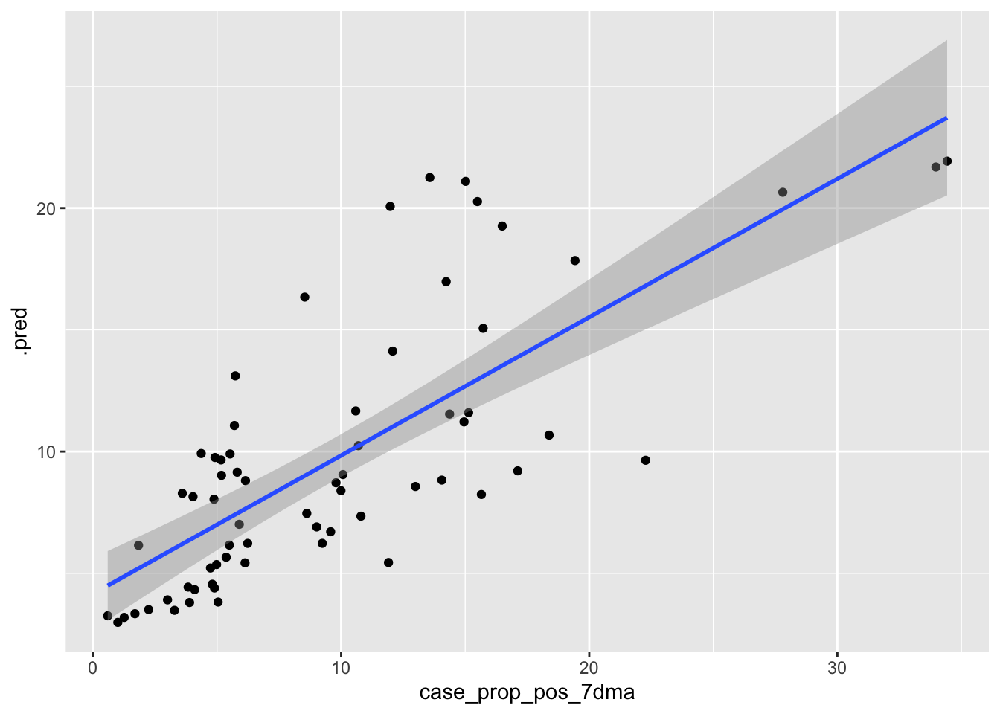
4. Log qPCR positivity rate as predictor
Test positivity rate 7DMA ~ Log WW PR
Viz
hist(data$case_prop_pos_7dma) #check distribution of dependent variable 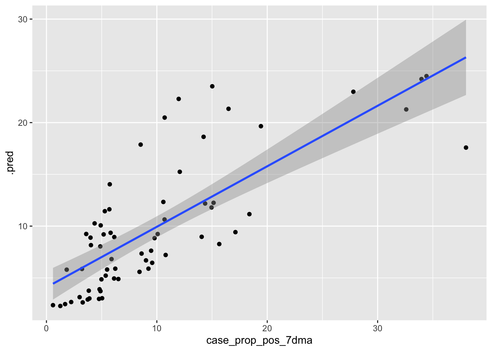
hist(data$log_pr_7dma) #distribution of independent variable 
plot(case_prop_pos_7dma ~ log_pr_7dma, data=data)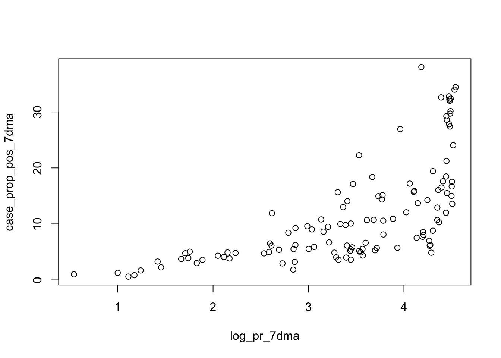
Model
recipe8 <- recipe(case_prop_pos_7dma ~ log_pr_7dma, data = train) #recipe
####################################################################################
workflow8 <- workflow() %>%
add_model(lr) %>%
add_recipe(recipe8) #model workflow
####################################################################################
set.seed(13)
fit8 <- workflow8 %>%
fit(data = train) #fit model to data
tidy(fit8) # A tibble: 2 × 5
term estimate std.error statistic p.value
<chr> <dbl> <dbl> <dbl> <dbl>
1 (Intercept) -6.56 2.21 -2.96 4.26e- 3
2 log_pr_7dma 5.11 0.669 7.64 1.37e-10####################################################################################
aug_train8 <- augment(fit8, train)
aug_train8 %>% select(case_prop_pos_7dma, .pred) #make predictions on train data# A tibble: 73 × 2
case_prop_pos_7dma .pred
<dbl> <dbl>
1 9.02 8.96
2 15.5 16.2
3 5.70 12.4
4 15.0 16.4
5 3.83 4.55
6 4.03 10.3
7 4.36 11.7
8 0.592 -0.868
9 1.84 7.96
10 9.99 10.5
# … with 63 more rows####################################################################################
set.seed(13)
folds8 <- vfold_cv(train, v = 5, repeats = 5, strata = case_prop_pos_7dma)Warning: The number of observations in each quantile is below the recommended threshold of 20.
• Stratification will use 3 breaks instead.
The number of observations in each quantile is below the recommended threshold of 20.
• Stratification will use 3 breaks instead.
The number of observations in each quantile is below the recommended threshold of 20.
• Stratification will use 3 breaks instead.
The number of observations in each quantile is below the recommended threshold of 20.
• Stratification will use 3 breaks instead.
The number of observations in each quantile is below the recommended threshold of 20.
• Stratification will use 3 breaks instead.set.seed(13)
cv8 <- fit_resamples(workflow8, resamples = folds8)
cv8_metrics <- collect_metrics(cv8)
cv8_metrics #check cross validation metrics# A tibble: 2 × 6
.metric .estimator mean n std_err .config
<chr> <chr> <dbl> <int> <dbl> <chr>
1 rmse standard 5.10 25 0.286 Preprocessor1_Model1
2 rsq standard 0.561 25 0.0214 Preprocessor1_Model1####################################################################################
workflow_null8 <- workflow() %>%
add_model(null) %>%
add_recipe(recipe8)
null_cv_metrics8 <- fit_resamples(workflow_null8, resamples = folds8)
collect_metrics(null_cv_metrics8) #check null model# A tibble: 2 × 6
.metric .estimator mean n std_err .config
<chr> <chr> <dbl> <int> <dbl> <chr>
1 rmse standard 6.70 25 0.321 Preprocessor1_Model1
2 rsq standard NaN 0 NA Preprocessor1_Model1####################################################################################
rmse8 <- aug_train8 %>% rmse(truth = case_prop_pos_7dma, .pred)
rsq8 <- aug_train8 %>% rsq(truth = case_prop_pos_7dma, .pred)
m8_metrics <- full_join(rmse8, rsq8)
m8_metrics #check metrics of predictions on train data# A tibble: 2 × 3
.metric .estimator .estimate
<chr> <chr> <dbl>
1 rmse standard 5.12
2 rsq standard 0.477####################################################################################
aug_train8 %>% ggplot(aes(case_prop_pos_7dma, .pred)) +
geom_point() +
stat_smooth(method = "lm") #check actual vs predictedWarning: Removed 7 rows containing non-finite values (`stat_smooth()`).Warning: Removed 7 rows containing missing values (`geom_point()`).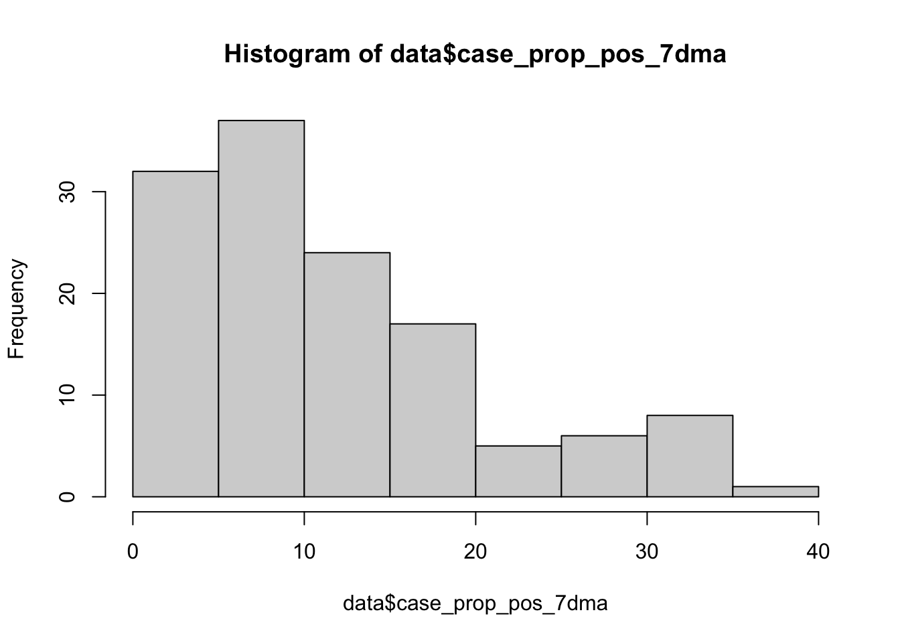
Notes
Model B3 seems to be performing the best so far (out of A1-4, B1-4) but no model is significantly out-performing the others yet
Many distributions are not normal and transformations do not help with normality, is this still okay to do linear regressions with?
What if something is potentially bimodally distributed? (see histogram for pr_7dma)
Next Steps (as of 11/17/23)
need to do model validation steps with the reserved 20% testing data
need to see how models will perform on the testing dates (April 2022-end of series)
need to build more univariate models, then move on to multivariates